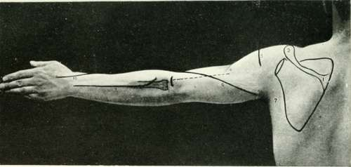

Vessels, Etc., Of The Upper Extremity
Description
This section is from the book "Landmarks And Surface Markings Of The Human Body", by Louis Bathe Rawling. Also available from Amazon: Landmarks and Surface Markings of the Human Body.
Vessels, Etc., Of The Upper Extremity
The axillary artery extends from the outer border of the first rib to the lower margin of the teres major muscle. (Fig. VI, 5.)
When the arm is held out at right angles to the long axis of the body, and the palmar surface of the hand turned upwards, the artery corresponds in direction to a line drawn from the middle of the clavicle to the junction of the anterior and middle thirds of the outer axillary wall at the outlet of that space. At its termination the artery and the accompanying nerves—the neuro-vascular bundle—form a projection which lies behind that due to the coraco-brachialis and biceps (short head) muscles. (Fig. VI, 10-13.)
The artery is divided into three parts by the pectoralis minor muscle, (Fig. VI, 4.) which muscle can be represented by a triangle, the base corresponding to the anterior extremities of the third, fourth and fifth ribs, whilst the apex is situated at the end of the coracoid process. The brachial artery.—The arm and forearm being held in the position already indicated as necessary in order to map out the axillary artery, (Fig. VI, 12.) the brachial artery corresponds to a line drawn from the outer wall of the axillary outlet at the junction of its anterior and middle thirds to the mid-point in front of the bend of the elbow at the level of the head of the radius. (Fig. VI, 15.) At the last point the artery bifurcates into radial and ulnar arteries.
The radial artery extends from the middle of the bend of the elbow at the level of the head of the radius (Fig. VI, 17.) to the radial side of the tendon of the, flexor carpi radialis muscle just above the base of the thumb. (Fig. XII, 9,10.)
The artery then crosses the "anatomical snuff-box" towards the base of the first interosseous space.
The ulnar artery in the lower two-thirds of its course accompanies and lies to the radial side of the ulnar nerve. (Fig. VI, 18.)
The upper third of its course is represented by a line which passes obliquely upwards and outwards to the middle of the bend of the elbow at the level of the head of the radius.
The superficial palmar arch is formed by the anastomosis of the superficial division of the ulnar artery with the superficialis volae, Fig. X, 7,9,12. or with some other branch of the radial artery. The convexity of the arch looks towards the fingers, and lies on a level with the lower border of the outstretched thumb. Occasionally the arch extends lower down, reaching as far as the upper of the two transverse creases on the palmar aspect of the hand.
The deep palmar arch, formed by the anastomosis of the radial artery with the deep branch of the ulnar, Fig. X, 8,10. lies about one finger's breadth above the level of the superficial palmar arch.
The digital branches of the superficial palmar arch pass downwards in the intervals between the metacarpal bones to within 1/2 inch of the digital clefts, (Fig. X, 11.) where the vessels bifurcate to run along the adjacent sides of the fingers.
The circumflex nerve and the posterior circumflex artery, (Fig. XIII, 3., Fig. VI, 7.,) both pass backwards through the quadrilateral muscular space, and curl round the surgical neck of the humerus towards the outer and front aspect of the shoulder region. The artery anastomoses with the anterior circumflex artery, and the level of the arterial circle so formed, and of the posterior circumflex nerve, may be represented by a line drawn at right angles to the shaft of the humerus from a point just above the centre of the deltoid muscle.
Fig. XIII. The Back Of The Arm And Forearm
1. | The acromion spine. | 6. | The musculo-spiral nerve. |
2. | Thee acromion process. | 7. | The posterior fold of the axilla. |
3. | The circumflex nerve and arteries. | 8. | The radius. |
4. | The insertion of the deltoid. | 9. | The posterior interosseous nerve. |
5. | The external condyle of the humerus, | 10. | The radial nerve. |
Continue to: